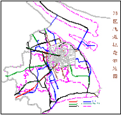

郊区轨道概念性方案研究 ( 2008年03月28日 )
郊区轨道概念性方案研究</STRONG>
研究时间：2007年1月—2007年 5月</P>

郊区轨道概念示意图</FONT>
一、研究背景<BR> 郊区轨道设施匮乏，吸引力不强。现状郊区范围内的轨道设施为全市的17%，客运量为全市的4.5％，主要服务于近郊的闵行、宝山。由于沿线土地开发中心偏离车站位置，旅客到站乘车时间长；地面公交线网没有形成衔接，车站服务范围不广，既有郊区轨道设施不仅规模匮乏，而且对客流的吸引力也不强。<BR> 交通需求发展迅速，需依赖轨道设施满足需求。远期全市人口2500万，郊区为1500万，出行总量在现状基础上增长70％，而郊区范围内出行增长150％以上。国际城市对比和理性分析表明发展轨道交通是建设郊区综合交通系统的唯一选择。国家高速铁路和区域城际铁路的建设，铁路运输能力将有极大程度的提升。因此，可以整合高速铁、城际铁、普铁、市域轨道、市区轨道延伸线形成郊区轨道网络，协力服务郊区。郊区范围内轨道运输和个体机动化交通是相互竞争关系。为实现预期的交通模式，需要在规划上对干线路网规划和郊区轨道进行相互平衡。既有5号线客流分析表明，郊区轨道效益的发挥依赖于围绕车站周边的土地开发，以及其他交通方式的配套衔接。需要在实施中保证郊区轨道优先发展。<BR>二、研究内容<BR> 1．出入市境的郊区轨道
对外辐射总量300万人次/日，其中长三角地区占70％，国内其余地区占27％。辐射长三角以外区域的客流以非通勤、通学为特征，可以采用站点集中客流，通道集中发送的运输方式，高速铁路适宜这一范围的运输；长三角范围内中心城市的联系客流具有量大、面宽的特点，适宜城际铁路运输。铁路运输负担27％的对外辐射总量，由高速铁、城际铁和普通铁路构成，日到发需求80万人次。<BR> （1）高速铁路<BR> 上海站、上海南、虹桥站引出，沪宁、沪杭方向两条线路，吸引长距离直通全国30万人次/日客流。<BR> （2）城际轨道<BR> 增加沪湖宣方向的城际铁路，采用城际铁路联系临港新城和中心城。上海站、上海南、虹桥、浦东引出沪宁、沪杭、沪湖宣城际，吸引区域内通勤为主客流30万人次/日；轨道9、11、7等轨道线与上海周边城市城际线衔接，促进长三角城市群发展。<BR> （3）普通铁路<BR> 增加西半环普铁联系宝山、嘉定、青浦和松江；通过铁路带动崇明开发建设。在金山支线、市区铁路联系线利用能力富裕开行市郊旅客列车。普铁日均客运20万人次；
2．出入中心城的郊区轨道<BR> 近郊区的宝山、闵行及浦东地区已经融入中心城，成为城市化地区的一个部分，城郊交通具有网络运输的特征；远郊区距离中心城较远，城郊联系具有走廊运输的特点。城郊联系总量700万人次/日，轨道需求240万人次/日。城郊联系轨道联系职能由市区轨道延伸线、市域轨道线、普通铁路以及城际铁路构成。<BR> 3．郊区区内的郊区轨道
郊区区内交通由新城城内交通，新城间、新城与郊区市镇交通构成。需求总量3570万，轨道日客运需求210万人次/日。新城内要求有1-2条城市轨道线做为新城范围内交通系统的骨干；新城间根据城市功能互补的需要布设切向轨道线路，联系新城。区内郊区轨道由通过新城的城际轨道、市域轨道、普铁构成。<BR> （4）市域轨道<BR> 由规划11号线北段、9号线、5号线、1号线南段、北段、2号线东段构成。<BR> （5）市区轨道延伸线
由市区3、7、14、13、12、17、15、16、8、18号线延伸线构成。<BR> （6）网络间衔接
衔接模式有站点衔接和共轨运营两种方式。铁路系统和市域轨道、市区轨道在铁路车站站点衔接；城际轨道和市域轨道共轨运营，车站设置共轨条件。<BR> 轨道设施总和1214公里，其中高速铁117公里，城际轨道227公里，普铁470公里，市域轨道303公里，市区轨道延伸线97公里。<BR>三、研究结论<BR> 根据郊区轨道的发展研究，结合各系统发展规划，通过本次研究建议：<BR> 1． 优化铁路布局规划，增强城市服务职能。需要对既有的铁路枢纽总图进行一定的优化，增加铁路为城市的服务职能。具体措施有：增加沪湖宣方向城际轨道；布置崇明岛普通铁路联系苏北；
2． 增强城郊和郊区内部轨道联系；结合上海郊区新城的规划实施，利用铁路设施加强中心城和郊区内部，补充郊区内部的铁路联系。具体措施有：增加浦东临港－上南路城际线；增加联系城市西部新城的普铁；<BR> 3． 预留与周边城市的轨道联系条件。考虑到上海进一步融入长三角的需要，在目前城区轨道交通延伸的同时，考虑预留与周边城市城际轨道联系的条件。具体措施有：城市轨道11、9、7号线郊区范围内车站考虑与周边城市城际轨道的衔接。<BR>


地址：上海市静安区铜仁路331号11楼 邮编：200040 Web:site:www.scctpi.sh.cn
电话：（021）62477711 62890464 传真：（021）62472386 62892787
 沪ICP备11003425号-4
沪ICP备11003425号-4